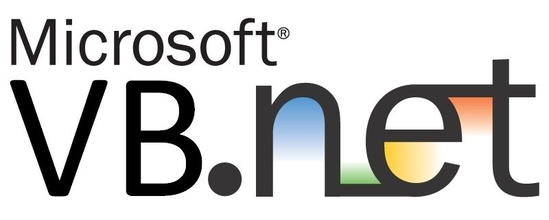

Estudante de Análise e Desenvolvimento de Sistemas, apaixonado por tecnologia e em busca da primeira oportunidade na área.
Olá! Sou André Vítor, estudante de Análise e Desenvolvimento de Sistemas e entusiasta da tecnologia.
Minha jornada começou com a curiosidade de entender como os sistemas funcionam por trás das telas,
e hoje transformo essa curiosidade em projetos práticos que fortalecem minhas habilidades
em programação e banco de dados.
Possuo experiência em Python e SQLite, desenvolvendo aplicações com foco em organização,
lógica bem estruturada e boas práticas de programação. Estou constantemente aprimorando meus
conhecimentos em desenvolvimento de sistemas, modelagem de dados e programação orientada a objetos.
Atualmente, estou em busca da minha primeira oportunidade na área de tecnologia, onde possa aplicar
meus conhecimentos, aprender com profissionais experientes e contribuir para a construção de soluções
eficientes e bem estruturadas.

HortiControl
Projeto desenvolvido para a disciplina de Sistemas de Informação, com o objetivo de auxiliar no controle e gerenciamento de uma hortifruiti.
Projeto de Lógica de Programação
Projeto desenvolvido em Portugol Studio para treinar lógica de programação por meio de um quiz interativo de perguntas e respostas.
BiblioTech
Projeto educacional desenvolvido para praticar Python, SQL e integração com banco de dados SQLite.
 (11)98444-7975
(11)98444-7975
 andrevitorcaldas@gmail.com
andrevitorcaldas@gmail.com
Portfólio atualizado em 01/Março de 2026
Integrantes: